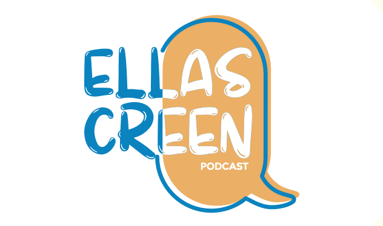

Podcast for Christian Women

Watch our channel
Follow us on Instagram and Facebook
Reading and Prayer Club
Our last episode
Episodes
Top 5 of our best episodes
The purpose of Lonliness
You are enough
Accountability
Worship as a Lifestyle
Faith and Therapy: Myths about Mental Health in Christian Communities